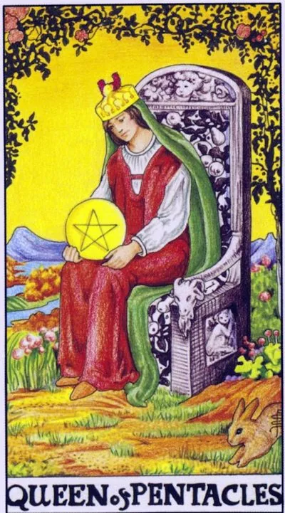

Minor Arcana · Pentacles
XIIIQueen of Pentacles
The mistress of a flowering house: care, backed by a practical grip, and prosperity, which is generously shared.
Archetype and core meaning
The queen sits on a stone throne among the flowering roses; the armrests are decorated with carved fruits, a rabbit flies at her feet. She does not fight for wealth, she has arranged it: the garden is fruiting, the house is full, the guests are full, and everything is held on her mind and hands. The queen of pentacles is the mature energy of care through matter: love expressed by dinner, comfort, a timely question.
Her strength is the connection of the incompatible: business prudence and heartiness, practicality and sensuality. Care here is not weakness, but a gentle form of power. The queen's generosity comes from fullness, not from fear of being bad; to feed, to warm and to clean up is also great magic.
Daily life
The house is at its best: it's deliciously cooked, the budget is reduced to trifles, the guests leave full, great family dinners and kitchen and bedroom arrangements, just put the "I" on the schedule: the royal garden needs its own gardener.
Work and career
Your profile is caring plus managing: a leader raising people, a doctor, a teacher, a cafe owner or a family business, you're valued for your mix of demanding and human, and financial acumen can turn a hobby into an income, and investing in the comfort of the workplace will pay off with increased productivity.
Relationships
Relationships are built like a well-groomed garden — regularly and with your hands: food, cleanliness, warmth, thoughtful little things. Feelings are expressed by deeds, and it works better than loud declarations. One caution: feed loved ones, but do not overfeed — care should not deprive an adult of independence.
Health
Health is fed by the simple: home-cooking, regimen, walking, attention to body signals, especially the recovery period after exhaustion, pregnancy and childbirth, all the programs to "regain strength" treat not only the diagnosis, but the lifestyle around it.
Spiritual meaning
The Queen of Pentacles is the Earthly face of the Great Mother: abundance born of care, not capture. Tradition associates her with home magic -- herbs, kitchen sorcery, the blessing of the hearth. The rabbit at the throne is a sign of fertility of plans. The first installment in any magic of this card is order, candle and bread given to the traveler.
The care that stifles: dissolving in others’ needs, anxiety for wealth and love measured by purchases.
Archetype and core meaning
The garden is overgrown, and the queen is still setting the table for others. The inverted queen describes a failure of the care mechanism: it stopped circulating and flowed one way, there are several options: hyperprotection, in which loved ones lose their ability to do themselves; self-denial, when there is no time or money left for themselves; anxious love, with gifts and control, to drown out the fear of being unnecessary.
The cold card is caring as a tool: obligingness to show off, resentment to ingratitude, the score presented in hindsight. The common knot of all plots is self-worth, given to the need of others for you. Return the hostess to her own throne: first feed yourself, then family.
Daily life
The whole house is held on you, and your common cold becomes a disaster — no one knows how to heat soup. Start delegate while you can teach, not burn: one piece of work someone has mastered already relieves the shoulders.
Work and career
You're indispensable in the worst sense: dragging other people's responsibilities, covering up mistakes, awards go to the loudest. Translate care into professional boundaries: help -- yes, burn out at the expense of others -- no. Your work should have the price you voiced.
Relationships
The partner has taken your care like the weather, a given without gratitude, and you buy the world as a couple at the cost of your own peace: gifts instead of conversation, service instead of intimacy. In another story, care mutates into control: phone, friends, menus under supervision. Release the leash and see who remains a volunteer.
Health
The body counts: chronic fatigue, hormonal disruption, headaches, the classic person you need but yourself, doctors, you say "time," family, "it will pass." It's time to get serious: examination, vacation, work with the root of anxiety. A dwindling source will not give anyone a drink.
Spiritual meaning
The channel of love is blocked: the energy flows out without returning, and the practitioner is exhausted, saving everyone but herself. Tradition saw here the false generosity of bribing spirits with gifts instead of working on yourself.
🌿 How the school reads this rank
The main idea
She's the master of the material world, she can count, she can remember, she can distribute and she can turn experience into a working system.
How it manifests
In work, you have an organizer, an executive, and a person who knows the value of resources; in relationships, you have body care, comfort; in life, you have trust in things that you can test and replicate.
The shadow side
Practicality becomes skepticism and hoarding.
Keywords
practice · memory · economy · comfort · calculation
📜 In detail — from the rank lecture
Essence of the card
The earth is practice and pragmatism: every penny, a great memory, facts, if it is profitable, it makes sense. Not creators, but creators of the repetition of experience: the earth grows the finished grain, memorized and repeated; strong in the usual.
Upright position
- Feel the material world with five senses.
- Work: will go to the unloved business for profit; it is also “the key-kick under the king – without it nothing is solved”: balances, distributes, checks, counts; where there is more benefit – there is a household.
- Relationships: straight – a good mother; feels the body perfectly, the relationship should be comfortable and comfortable; memory pulls into old ties – comes out slowly but practical (“let’s meet on business”).
- Loves natural: green corners, natural shades; easy on diets - real numbers on the scales make her happy.
- Images: Cinderella (“from dirt to princes” – the earth is slow: first digging, then blossomed), Julia Roberts in “Pretty Woman” (the service turns into love; red dress – “the most greedy before sex”: physiology, not passion), Erin Brockovich, Dana Scully (“until I see aliens – I won’t believe”), Downton: grandmother-guardian of traditions versus granddaughter, losing her head from hormones.
Negative meaning
• excessive pragmatism and hoarding - "Gagarin flew, God did not see there: what I do not see, that and not"; misunderstanding of art ("My child can draw no worse"); "Why give birth to a child, if I am already well off"; incredulous pessimism "Earn - then we will talk."
School emphases and distinctive points
- The main reception of the lecture is film portraits as a textbook: Musketeers, Gone with the Wind, Downton, The X-Files, Harry Potter.
- His astrology is simple: cancer/scorpion/fish are cups, twins/balances/waters are swords, rams/lion/shooters are wands, corpuscles/maiden/capricorn are pentacles. The personality consists of four elements: the card shows the prevailing regime, Aries can fall out any queen.
- Menagerie: the cat of wands - witch and charm (the cat can not be trained - only create a desire, like Kuklachev hungry cats; the dog obeys orders - this is about swords); the pentacle hare - fertility and childbirth; the butterfly of swords - the transformation of the caterpillar into an exalted (as well as a dragonfly); the cups of fish - there is no mermaid: only the king lives completely in the sea.
- Epochal scale: the destruction of walls and borders reads on water (Gorbachev), the return of walls – again swords.
- Instead of examples of layouts – portrait characteristics of public figures; the Slavic series and the topic of health in the lecture do not sound at all.
Keywords
practice, memory and habitual, the keyboard of the king, physical comfort.